Introduction
June 6, 1944. D-Day. Hundreds of thousands of men, supported by thousands of ships and aircraft, pour onto the beaches of Normandy in northern France. It is the largest amphibious assault in the history of the world.
It is successful. By the end of the attack, soldiers from the United States, Canada, Great Britain, France, Poland, the Netherlands, Norway, Denmark, Belgium, Australia and New Zealand have succeeded in overcoming a defense that German field marshal Erwin Rommel has called “impenetrable.” The forces of western civilization have combined against Hitler’s savage barbarism and gained a toehold on the coast of northern Europe.
But it is only a toehold. Even as newspapers throughout the world trumpet the news of the invasion, the Allied armies are moving to secure their position, which is precarious at best. To accomplish this, to insure that they will not be driven into the sea as quickly as they arrived, they must knock out German strongholds throughout northern France, Holland and Belgium. The Battle of Normandy has begun.
The countryside of Normandy is a soldier’s nightmare. Large flat fields are separated by tall, dense hedgerows grown to break the winds that sweep down from the North Sea. The hedges provide ample concealment for German troops who wait in ambush for Allied soldiers who must cross the fields. The fighting is a series of struggles from field to field, and from farmhouse to farmhouse. It often takes days to advance only a few miles.
In the first weeks, the German defense is fierce. Fresh, well-trained soldiers are commanded by officers with long experience fighting in Russia and North Africa. These men offer incredible resistance to Allied attacks. To drive them out of Saint-Lo, for example, it is necessary to pound the city with aerial and artillery bombardments that literally flatten it. Afterwards, Supreme Allied Commander Dwight D. Eisenhower observes the destruction and comments that it is possible to walk from one end of Saint-Lo to the other, “without touching the ground,” on the layers of broken building stone and concrete that are all that is left of the city.
Eventually the battle is won. Three months after D-Day, Allied forces have “locked up” the northern coastline of France, Holland and Belgium, and have liberated France and the Low Countries. Germany is caught in a vise between the Western Allies in France, Holland, Belgium and Italy, and the Red Army which is sweeping across eastern Europe toward Berlin.
The Battle of Normandy is a crucial part of the world’s history. If the Allies had been repulsed from the beaches on D-Day, or if the subsequent fighting had resulted in German victories, there would have been effects lasting to modern times and beyond. For better or worse, the world would be different than it is.
History is a complex network of events. Something which occurs at any particular time is influenced by things which have happened in the past and by other things happening at the same time. In turn, an event influences other events at the time it happens and has consequences in the future. Within this network of interlocking events, nothing is insignificant. A “minor” occurrence may have the most profound effects twenty or a hundred years later. Consider two examples:
- A Russian judge in a Czarist court sentences a member of a radical student group to death for his part in an assassination plot, and the student is hanged. The student’s younger brother, Vladimir Ilyich Ulyanov, begins to nurture a hatred of the Czarist government that will last the rest of his life, even after he has changed his name to Lenin.
- A professor in a Viennese art school rejects an application for admission to the school from an unemployed World War I veteran. The ex-soldier, one Adolf Hitler, must seek a career outside of art.
Would the course of history have been different if the judge had shown leniency to an impetuous youth, or if the professor had found merit in the ex-soldier’s drawings? We can’t know for certain, but it seems likely.
How much more likely then, that any changes in the vast movements of armies, the destruction of cities, the wholesale loss of life among soldiers and civilians during the fighting for Normandy, would have far-reaching consequences? How many people living today have fathers or grandfathers who survived the battles? How many people would have been born if other soldiers had not been killed? What effects has the Allied victory had? What effects would a German victory have had?
We can only speculate on the answers to these questions. We can state that the Battle of Normandy has had effects on the lives of virtually everyone living today, but we would find it extremely difficult to analyze exactly what those effects are, let alone to predict what the effects of a different Battle of Normandy would have been.
Now suppose that a group of people exists today which believes that it can make such an analysis, and further suppose that this group has the means to alter the outcome of the battle in such a way that the group will benefit. Using time travel, members of the group will take soldiers and modern weapons to the Europe of 1944 to influence the Battle of Normandy so that the group will gain enormous political and economic power forty years later. Their desire is to change the past so that they can rule the present. The danger to you — to everyone — would be enormous. If these people should succeed in their plans, you would be under the absolute domination, at the very best. At worst, you would never have been born at all.
This is the premise of Rescue Raiders. The group of terrorists does exist; they have a time machine; they are determined to use their technology to change the course of World War II so that they can control…YOU.
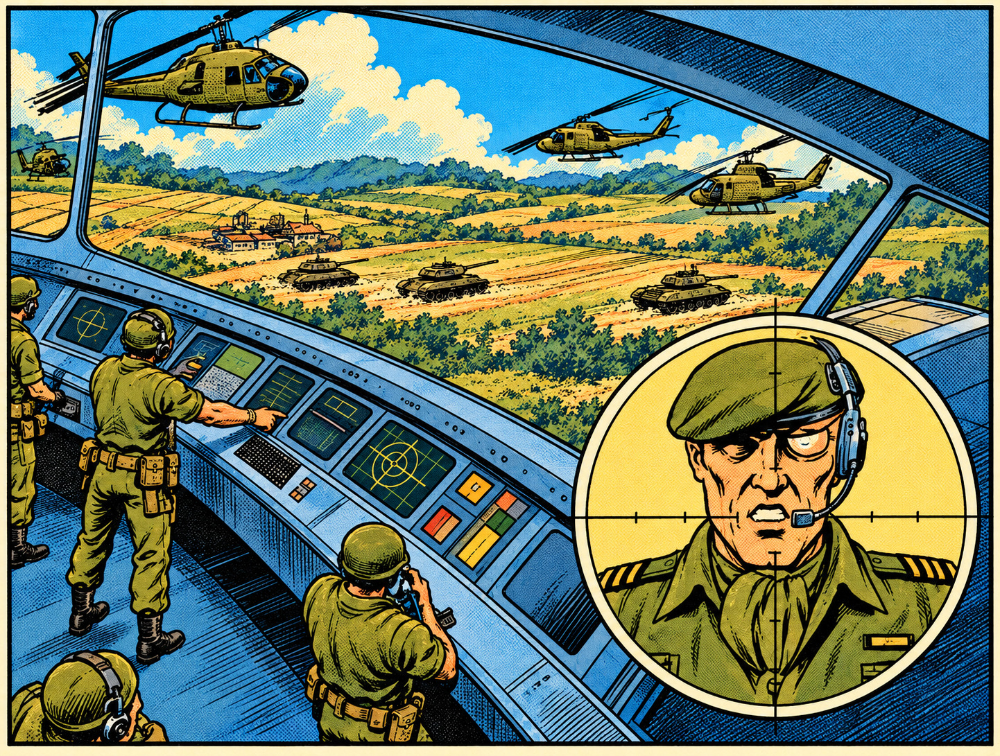
In turn, you have the opportunity to stop the terrorists. Will you take this opportunity? Will you travel to the past to rescue the present?
About the game
Rescue Raiders is a strategic war simulation game. You command aircraft and ground forces to advance toward the enemy and destroy him. Unlike other strategic war games, Rescue Raiders lets you see and control what happens directly. You will actually see helicopters, ground vehicles, soldiers and missiles. You do not see a set of odd symbols on a map.
To win Rescue Raiders you must use both tactics and strategy. Tactics is the “shoot-’em-up” part of the game. To succeed tactically, you must use your weapons, men and equipment to win fights against the enemy.
Strategy is the art and science of gaining an advantage over the enemy on the battlefield. Rescue Raiders contains elements which, if you gain control of them, will give you an advantage over the Time Terrorists. You must coordinate your tactics to gain control of these strategic elements. You cannot win Rescue Raiders by tactics alone.
Like any other General, you must discover for yourself the strategic elements and learn how to deal with them.
In the interests of fairness, the enemy has at least the same opportunity to control strategic elements as you do.
Rescue Raiders is divided into eight battles. If you win a battle, you will automatically proceed to the next battle. Each new battle is more difficult than the last. Your loss of any of the battles will end the game in total victory for the enemy.
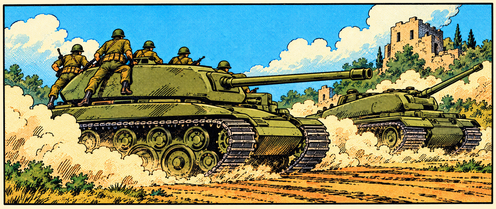
Game elements
Rescue Raiders contains a number of stationary and mobile elements. Stationary elements include time machines (headquarters) for you and the enemy, helicopter pads and bunkers. Mobile elements are helicopters, tanks, soldiers (men), engineers, anti-aircraft-missile carriers, and demolition team vehicles (DTVs).
Stationary elements
Time machines
The time machine located at each end of the field serve as headquarters for both sides. A battle is won or lost when you or the enemy succeed in moving a Demolition Team Vehicle to the opponent’s time machine. Only the Demolition Team Vehicle will destroy time machines, which are impervious to all other machines.
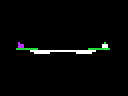
Helicopter pads
Helicopter pads serve as the starting points for new helicopters. They also serve as refueling, re-arming and repair stations for helicopters during combat. A helicopter is automatically (but not instantly!) refueled, repaired and loaded with a maximum weapon supply whenever it lands on a helicopter pad. A helicopter pad is located by each time machine.
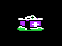
Bunkers
There are different types of bunkers in Rescue Raiders. Some of these may be destroyed if hit by weapon fire, while other types can only be destroyed by a very high number of hits, or cannot be destroyed at all. A bunker can be controlled only by placing soldiers in it. Bunkers are found at different locations from one end of the field to the other.
Barrage balloons
Barrage balloons are “semi-stationary” elements which are moored to some of the bunkers. Helicopters will be destroyed if they strike an opponent’s balloon or its mooring line. Helicopters can fly safely past any friendly barrage balloon or its mooring line.
Mobile elements
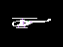
Helicopters
Helicopters serve as primary observation platforms, as fighting vehicles, and as troop transport vehicles. Helicopters are the most heavily-armed and destructive game elements, and are also the fastest-moving of the game’s mobile elements. You will have four (4) helicopters at the beginning of play. If you run out of helicopters, you will lose the game. The enemy has an unlimited supply of helicopters. Helicopters are armed with machine guns, high explosive bombs and “smart” missiles at the beginning of a game. Helicopters are lightly-constructed and can be damaged or destroyed by any opposing fire.
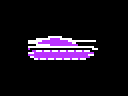
Tanks
Tanks are heavily-armored ground vehicles equipped with cannon and machine guns at the beginning of play. Tank weapons are effective against any other mobile game elements, including other tanks. Tanks resist enemy fire better than any other mobile element in the game.
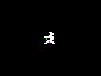
Soldiers & engineers
Soldiers or men are airborne infantry. They are equipped with parachutes, and they wear body armor which provides some protection against light weapon fire. They are equipped with automatic weapons.
Engineers are military construction specialists. They can repair or replace certain installations which may be damaged or destroyed in combat. Engineers fight as normal soldiers first. Engineers become soldiers if they are transported by helicopter.
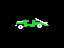
Anti-aircraft missile carriers
Anti-Aircraft Missile Carriers are jeep-like vehicles. Each is equipped with a single smart missile. This missile is automatically launched when an enemy helicopter is in range and will seek and “home in” on the helicopter. Missile carriers will only attack helicopters. The carriers have no defensive capabilities, and can be destroyed by fire from any other element. A missile carrier is a “one-shot” item: it self-destructs after launching its missile.
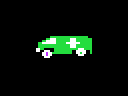
Demolition team vehicles
Demolition Team Vehicles look like vans or ambulances. They contain electronic devices which allow them to neutralize and destroy the time machines. DTVs have no other offensive or defensive capabilities and are vulnerable to fire from any other game element.
Weapons
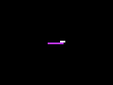
Missiles
“Smart” missiles are carried by helicopters and by anti-aircraft-missile carriers. They are the fastest, long-range and most powerful weapons possessed by either side. A smart missile will seek and “home-in” on the target it is launched against. Smart missiles launched by the Anti-Aircraft Missile Carriers will attack only opposing helicopters. A smart missile can be launched from a helicopter against any opposing element.
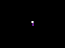
Bombs
High-explosive bombs are carried by helicopters only. An element struck by a bomb will be damaged or destroyed. High-explosive bombs must score a direct hit to be effective.
Machine guns
Machine guns are carried by helicopters, tanks and soldiers. They have a high rate of fire, but they have the least power and range of any weapon in the game. Tanks and soldiers have an unlimited supply of machine-gun ammunition.
In addition to these weapons carried by mobile elements, there are also stationary weapons and weapon-launchers.
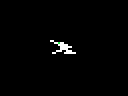
Anti-aircraft & tank guns
Anti-aircraft guns are ground-based rapid-fire cannons. They are effective against helicopters and in some cases may be turned against tanks. Anti-aircraft (or anti-tank) guns fire automatically whenever the opposing element is in range.
Some bunkers are equipped with machine guns which can be used by the side occupying them.
Getting started
Rescue Raiders can be played on any Apple II-series microcomputer equipped with a disk drive, a joystick* and at least 64K of RAM. A color TV set or monitor will show the graphics to best advantage, but the game can be played and enjoyed with a monochrome monitor.
Loading the game is simple:
- Switch the computer and monitor or TV set ON.
- Insert the Rescue Raiders game disk in the disk drive with the disk label up and toward you, then close the disk drive door. If you have more than one disk drive, use Drive 1 (the INTERNAL drive on an Apple //c). The red light on Drive 1 will light when the computer is switched on.
(When playing Rescue Raiders with an Apple //c computer, reverse the order of these steps. That is, insert the game disk before switching the computer on).
Your disk drive will then make some clicking and whirring sounds. After a few seconds, “Rescue Raiders” will be displayed at the top of the monitor screen, indicating that the program is loading.
When the program has been loaded, the title sequence will begin.
Once the title display appears on the screen, your disk drive will run for several more seconds. At the end of this, a “demo program” will begin running, and will show you some of the features of the game.
When you are ready to begin play, press the S key (for Start) on your keyboard. This will cause the demo program to disappear, and the message:
CherbourgPrepare for action.
will appear on your screen. After a short pause, this message will be replaced by a map of Europe, with a blinking star showing Cherbourg’s location. After another pause, the map will disappear and actual game play will begin.
Trouble-shooting
As it is loaded, Rescue Raiders checks the speed of your disk drive to insure it will work correctly. If your drive is operating outside of correct limits, the message:
will be displayed on your screen. Rescue Raiders may continue to operate properly after this message appears, but there is a possibility that you will damage your disk if you continue playing after receiving a drive speed warning, and Rescue Raiders will not save high scores or games in progress under these conditions. Try loading the game on another computer system. If it loads successfully without presenting a drive speed warning, the problem lies with your disk drives. Please get your drive speed checked and adjusted if you receive a drive speed warning and the problem is not repeated with other machines.
How to play
The play area in Rescue Raiders is a long battlefield. Your headquarters, consisting of a time machine and a helicopter launch pad, are located at the right end of this battlefield, and the enemy’s headquarters are located at the left end.
The game screen
The game screen is divided into two main areas from which you can obtain information. The larger area, consisting of most of the screen from the bottom up, is a television-like display. This display is roughly centered on your helicopter, and shows objects, equipment and men in the immediate vicinity of your helicopter. The smaller area stretching across the top of the screen is your “tactical radar” display: it depicts every element on the battlefield, including missiles.
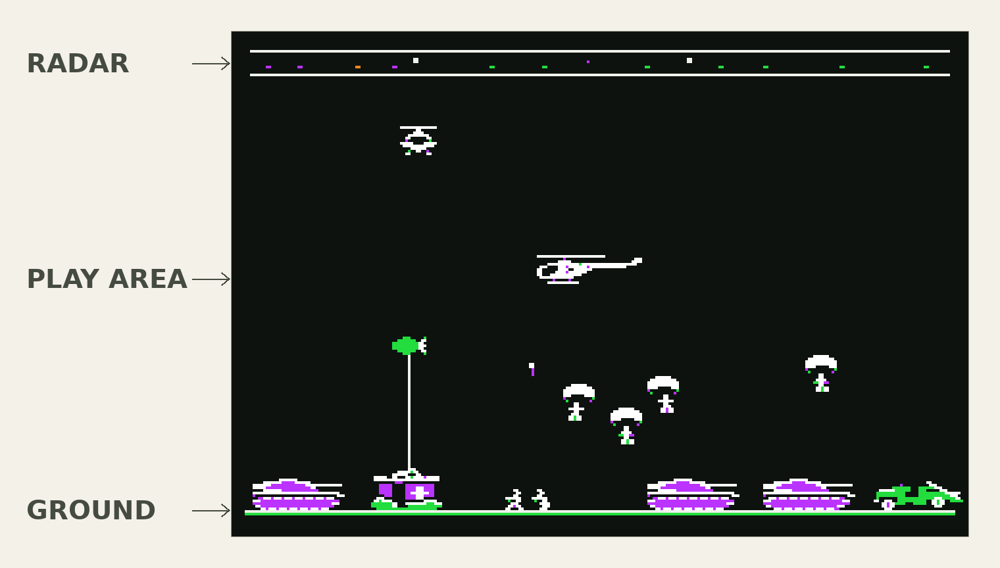
You use the large display to maneuver your helicopter in combat and on reconnaissance missions. Use the tactical radar display to obtain an instant summary (or “map”) of the positions of all elements belonging to you or the enemy. One important use of the tactical radar is to detect enemy weapons which may be homing “in on” your helicopter. Objects in the tactical radar display are color-coded according to what type of element they are. The helicopters are represented as white squares which are larger than any other element on the tactical radar.
Helicopter maneuvers and operations
Your helicopter is the only game element which you directly control and operate. You use your joystick to fly the helicopter: simply push the stick in the direction you want the helicopter to go.
Helicopter weapons are controlled by the joystick buttons.
Button 0 (the button nearest you) fires the helicopter machine gun. The machine gun will continue to fire as long as Button 0 is depressed or until you are out of ammunition.
Button 1 (the button farthest away from you) drops bombs. Bombs will be released as long as Button 1 is depressed. You can carry up to ten bombs at a time.
Press both buttons simultaneously to trigger the helicopter smart missiles. The helicopter must be at the same altitude as a target before the missiles will launch. The missiles will “lock in” on the closest enemy element at the helicopter’s altitude, which may not be the target you wish to hit. Your helicopter carries a maximum of two smart missiles at a time.
Any helicopter weapon can be used, and is effective, against any mobile element. Helicopter weapons can be used against any stationary element, but are ineffective against the time machines and certain bunkers.
No weapons can be fired or launched while your helicopter is on the ground or on a pad. If you press Button 1 while on the ground, bombs will not be released, but men who are in the helicopter will get out and begin to march toward the enemy.
Your helicopter can carry up to five men at a time, in addition to the pilot. If you land in front of any group of your own men, they will climb into the helicopter as they reach it, until five are on board.
If you press the space bar while the helicopter is flying and carrying men, one of the men will bail out and attempt to parachute to the ground. You can drop a full load of men by pressing the space bar five times. Sometimes a parachute will not open, and the man will fall to the ground and be killed. If your helicopter is destroyed in the air, a man will sometimes survive to bail out and parachute safely to the ground, where he will fight as an infantryman. This man may be the helicopter’s pilot or an infantryman that is being transported.
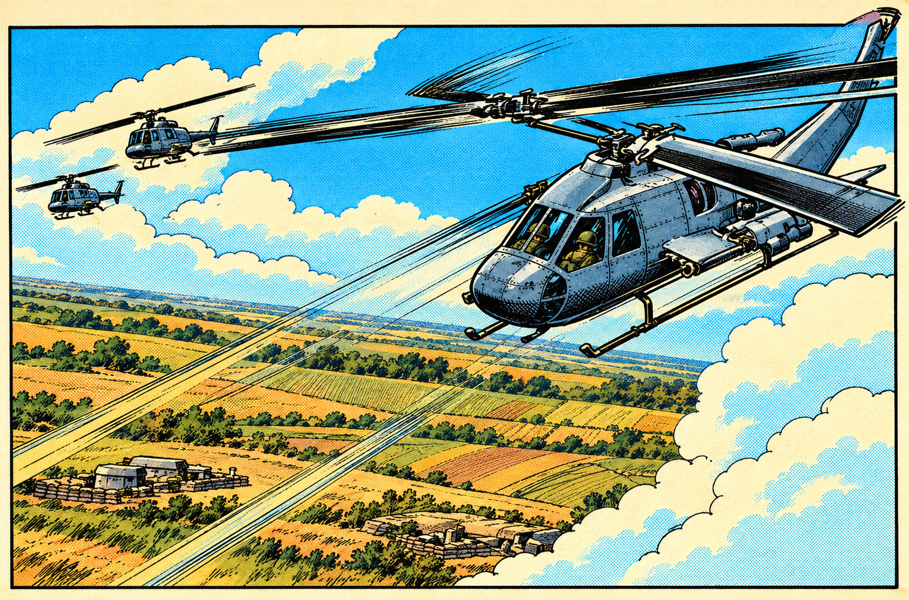
Your helicopter will be damaged if it is hit by enemy weapons, even if it is not destroyed. You can tell when your helicopter has been damaged, because it will emit puffs of smoke from the lower rear part of its fuselage. These puffs of smoke will increase in size as damage becomes more severe.
If your helicopter is destroyed and you still have additional helicopters remaining, the screen will continue to show the helicopter’s last location for a few seconds, then will switch to your headquarters helicopter pad. At times, you may wish to continue watching the action taking place at the site where your helicopter was destroyed: holding down either joystick button (before the view shifts to the helicopter pad) will allow you to see events occurring after the destruction of your helicopter. Releasing the joystick button(s) will then return the screen view to the new helicopter at the right end of the field.
Return your helicopter to the launch pad if you want to replace depleted weapons and ammunition, or if you wish to refuel or repair damage. When the helicopter has been completely repaired, re-armed and refueled, a green bar will appear across the top of the screen immediately below the tactical radar display. The more supplies and repairs your helicopter requires, the longer it will have to wait on the pad before the green bar appears. If men are on board the helicopter, they may be able to make repairs without returning to the launch pad under certain circumstances.
When your fuel becomes low, the “Low Fuel” message will appear in the center of the display screen. When fuel becomes dangerously low, an audible warning will begin to tick, and a fuel gauge will be displayed at the top of the screen.
Ground forces
You must advance ground forces to take ground and to win the game by destroying the enemy time machine. Ground forces include all mobile elements except helicopters.
Ground forces are deployed by using the keyboard.
| Press | For |
|---|---|
| T | Tanks |
| M | Men (soldiers) |
| E | Engineers |
| A | Anti-Aircraft Missile Carriers |
| D | Demolition Team Vehicles |
Pressing T, A or D will bring one vehicle onto the field. Pressing M will deploy a squad of five men, and E will deploy two engineers. You must wait until a vehicle or squad is on the field before deploying something else. You will hear a click as an element is deployed, and the lines above and below the tactical radar display will change from blue to white while elements are moving onto the field (this change is visible on a monochrome monitor, although the colors are not).
Ground forces advance and fire on enemy forces automatically. A ground force element stops moving forward only when it is actually firing at an enemy element.
Ground forces should be deployed in such a way that they will overcome resistance on the field. Remember to anticipate normal losses and casualties.
Your helicopter is an invaluable tool for supporting and defending ground forces.
Finance
Like a real army, your forces require money to operate. Everything you use, except for your initial allotment of helicopters and the fuel and weapons for them, must be paid for. Every time you press a key to deploy a mobile ground element, the price of that element will be subtracted from your balance. You may purchase additional helicopters by pressing the H key if you have sufficient cash.
You receive money according to the time you spend in combat. Every fifteen seconds, one small bag of money is added to your account.
You will be charged at the following rates, in small bags of money:
| Item (quantity) | Price |
|---|---|
| 1 Helicopter | 20 bags |
| 1 Tank | 4 bags |
| 5 Men | 5 bags |
| 2 Engineers | 5 bags |
| 1 Anti-Aircraft Missile Carrier | 3 bags |
| 1 Demolition Team Vehicle | 2 bags |
If you do not have sufficient cash to pay for an item, pressing the key to deploy it will have no effect.
The game imposes limits on the total number of each mobile element which can be on the field at one time. If you attempt to exceed these limits, pressing a key will not deploy a new element, even if you have enough cash to buy it.
Computer status reports
You can obtain a report from your command computer at any time by pressing C. This report shows you the amount of cash you have and displays your helicopter combat readiness. The amount of cash is displayed first, followed by the number of bombs, smart missiles and men aboard your helicopter. Last, the number of helicopters remaining to you is shown.
Cash is displayed as moneybags of two different sizes. One large bag represents four small ones. The prices of equipment and men listed above are listed in small bags.
You will see the symbols for bombs, missiles or men only if they are on board your helicopter at the time of the report.
A gauge showing the fuel supply for your helicopter will be displayed across the top of the screen just below the tactical radar display during a Computer Status Report. On a color monitor, white represents fuel remaining, and red represents fuel already used. The white bar will shorten to the left and be replaced by red as fuel is consumed. You will be able to see the difference between the “white” and “red” portions on a monochrome monitor, even though the actual colors are the same.
If you wish to repeat a particular item in the report before the report is finished, pressing C will cause the report to begin again.
The number keys, 1–9, adjust the speed of reports. Pressing 1 will cause the reports to be displayed at the slowest possible speed; pressing 9 will give the fastest reports. Other number keys will display reports at various intermediate speeds.
Scoring
The objective of Rescue Raiders is to win battles. The only way to achieve total victory and truly win the war against the Time Terrorists is to defeat them on all eight Rescue Raiders battlefields. To help you measure your progress and your achievement even if you fall short of this goal, a point score is provided.
Rescue Raiders is scored according to two factors:
- The amount of damage done to the enemy;
- The cost of damaging the enemy.
Your point score is an indication of how well you have achieved the objectives of Rescue Raiders. Your goal should be the highest possible point score while winning the eight battles.
War, however, is not a black-and-white issue. The winner of a war pays an enormous price for victory. There are the obvious financial burdens involved not only in the purchase of weapons and equipment, but in the shifting of a nation’s production from consumer goods to military supplies. The civilian population must bear the cost of this production directly, in the form of taxes, and indirectly, in the form of goods and services which become scarce or unavailable in a wartime economy. Even so, the financial cost of a war is less important than its moral cost. No amount of money will restore those who are killed. A nation at war has a moral obligation to balance the advantages of victory against its costs.
Of course, no one is actually harmed in Rescue Raiders, but the game’s scoring is designed to penalize victory at excessive cost.
Points are deducted from your score for each mobile element which you deploy. Points are also deducted for time spent in battle: the longer it takes you to win, the lower your score will be, with all factors equal.
The point system offers a method of assessing and comparing victories or losses. The point score has no bearing on winning or losing the game itself. Therefore, it is possible to win Rescue Raiders with a very low or even a negative (minus) score, and it is possible to lose with a very high score, although these would be extreme situations.
The best scores will always be recorded by players who achieve victory at the lowest cost. The ideal game will involve the smallest possible number of ground forces. Every time you deploy a squad of men or a tank, for example, you lose points. If your game “strategy” consists of no more than sending out maximum ground forces at all times, you will be penalized by very low point scores.
You can display your current score at any time by pressing the ESC key. Game play will be paused or frozen while the score is displayed, so pressing ESC is also a handy way to stop the game if you are interrupted. (If you will be pausing for more than a few minutes, we suggest switching off your monitor until you resume play. This will prevent the possibility of “burning” your monitor screen which could occur if you left it with a non-moving display for an extended period of time). Press ESC again to resume play.
Whenever you win or lose, you will be given the opportunity to record your score on the game disk if it is among the top five. To do this, simply type your name then press RETURN when the screen for recording high scores appears. High scores are displayed during the demo program when Rescue Raiders is first loaded or after a game is saved. Note that you cannot save high scores on the backup copy of Rescue Raiders which is recorded on the “flip” side of the game disk.
Other features
It can take many hours to win all eight battles in RESCUE RAIDERS. A “save game” feature has been incorporated to allow you to continue playing the same game over an extended period of time without starting from the beginning at every session.
To save your current game, press ESC to freeze the game and display your score, then type “SAVE” (press the keys S A V E in sequence). The letters you type will not be shown on the screen, but the red light on your disk drive will come on, and the drive will whir briefly while the game is saved. After saving the game, Rescue Raiders will return the “demo” program that precedes normal game play. (At this time, or when you load Rescue Raiders with a saved game disk, you will see a small “diskette” symbol in the upper right hand corner of the demo game screen). You can remove the Rescue Raiders disk from the disk drive and switch off the computer monitor.
To resume play with a saved game, switch the computer and monitor on and insert the Rescue Raiders disk just as you would to start playing from the beginning. When the “demo” program begins, however, there will be a small picture of a computer disk in the upper right corner of the screen if a saved game is present on the game disk. If you want to resume playing your saved game, type “CONT” (press C O N T in sequence) for “CONTinue.” Your saved game will be loaded, then erased from the disk. The screen appearance will be exactly as it was when the game was saved, including the “scoreboard” in the center of the screen. Press ESC to begin play. (You may also resume play at the point you left off immediately after saving a game by typing “CONT” while the demo program is running — if you change your mind, for example — but you will then have no game saved).
When you win a battle, you will receive a message, then a short history of one of the cities involved in the liberation of France and the Low Countries will be displayed. This material “scrolls” horizontally across the bottom of the screen. The city histories are capsule descriptions of some of the most interesting places in the world: we hope you will be informed and entertained by them, and we recommend you read them. It may happen, however, that after you have fought your way through the first three or four battles several times, you may not wish to reread the histories. In this case you can skip over this material by pressing ESC when it begins to scroll.
To help you start playing quickly, we have included a reference card with this Training Guide. The reference card summarizes the joystick and keyboard commands recognized by Rescue Raiders.
The rest is up to you. You must discover the nature of the obstacles and defenses the enemy will throw in your path, then devise the tactics and strategy necessary to overcome them.
You may feel that this Training Guide does not provide all the information you need to win Rescue Raiders. If you feel this way, you are right. We have deliberately omitted certain facts and details which would make victory easier.
Good Luck!!
Quick reference
Helicopter control summary
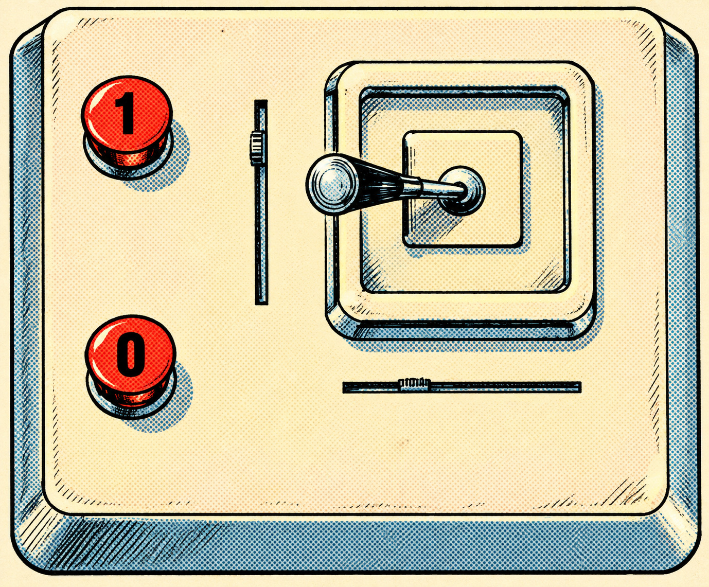
| Joystick operation | Chopper status | Resultant action | Special instructions |
|---|---|---|---|
| Button 0 | Airborne | Machine gun fires | Only 50 rounds to a fully loaded magazine |
| Button 1 | Airborne | Bombs dropped | — |
| Button 1 | Grounded | Men are disembarked | — |
| Buttons 0 and 1 | Airborne | Missile fired at nearest enemy in front of chopper | Press both buttons |
| — | On launching pad | Refuelling or repair | Takes place after landing on pad |
| — | Lands in front of a group of friendly infantry | Men are embarked | Maximum load is 5 men |
Helicopter weapons will fire only while helicopter is airborne.
A “two-button” joystick (like the Kraft Model 820) is required.
To save a game in progress
- Press ESC.
- Type “SAVE” (without quotes).
- Wait for disk drive to stop and demo program to begin.
To restore a saved game
- Load game and wait for demo program to begin.
- Type “CONT” (without quotes).
- When disk drive stops and game screen appears, press ESC.
Keyboard
| Key | Command |
|---|---|
| H | Purchase spare Helicopter. |
| T | Purchase and deploy Tank. |
| M | Hire and deploy squad of five Men. |
| E | Hire and deploy squad of two Engineers. |
| A | Purchase and deploy Anti-Aircraft Missile Carrier. |
| D | Purchase and deploy Demolition Team Vehicle. |
| C | Display Computer Status Report. |
| ESC | Display score and freeze game. |
| 1–9 | Adjust information display speed. |
| Space Bar | Drop paratroopers. |
| CTRL + R | To reset game. |
Credits
Rescue Raiders
A Strategic War Simulation Game
Second Edition
- Programmed by
- Arthur Britto II and Greg Hale
- Game text and Training Guide
- G. Daniel Hackett
- Strategic design
- G. Daniel Hackett
Norman A. Sirotek
Arthur Britto II - Graphics design
- Rick Austin
- Graphics digitizing
- Arthur Britto II
- Published by
- Sir-Tech Software, Inc.
6 Main Street
Ogdensburg, New York 13669